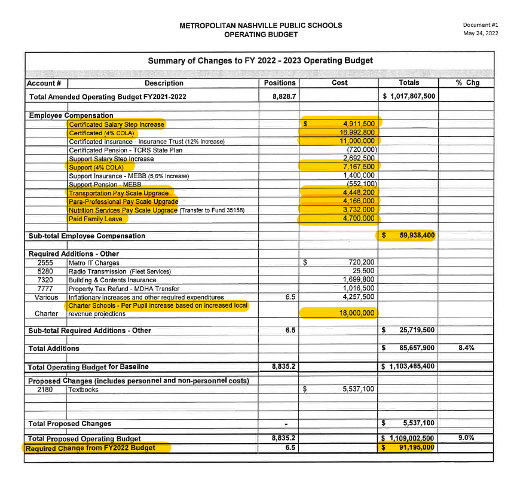
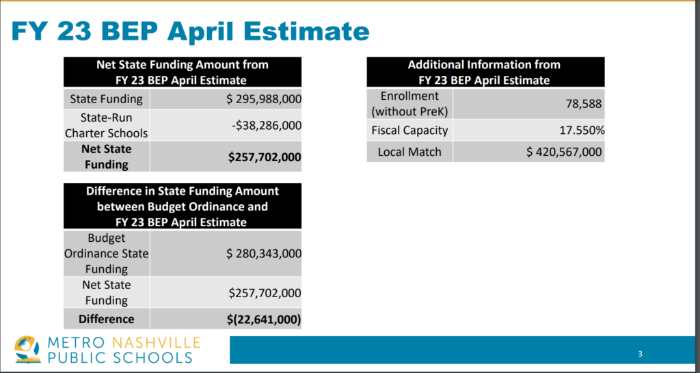
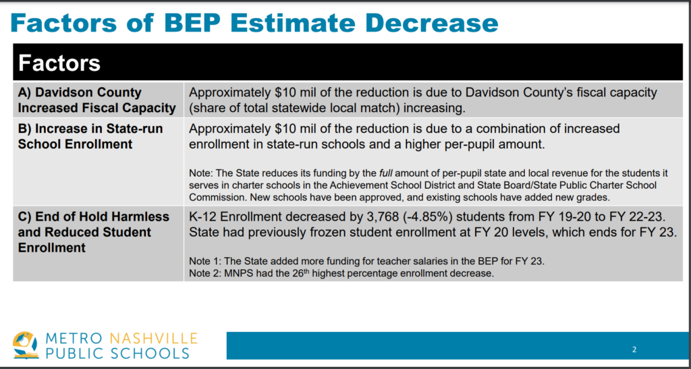
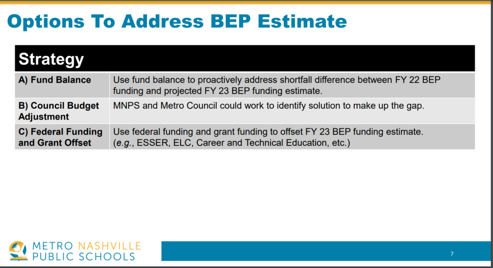
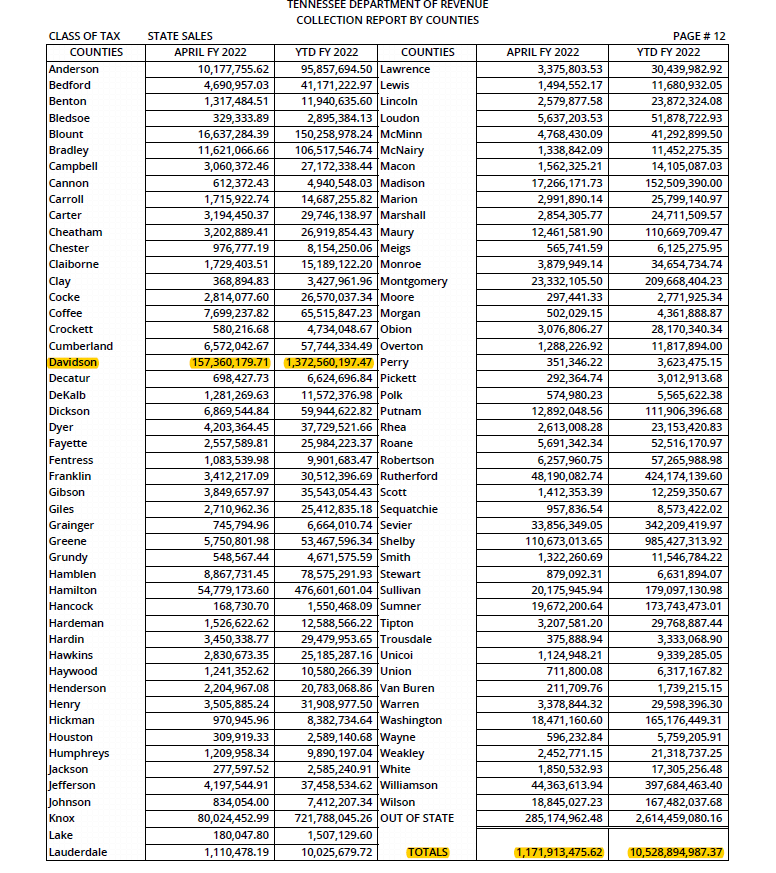

Budget Conversations: All things MNPS
Last year , the MNPS budget had many firsts. First budget to ever exceed $1 billion. And for the first time ever, MNPS teachers because the best paid in the state. This year, the mayor added an additional $91 million to MNPS. However, this summer’s conversation by the state about things like “BEP” and “TISA” created a lot of confusion and anxiety about the MNPS FY23 budget. The questions are: What is TISA? What is BEP? And how do these both affect this year’s budget? Now that our teachers are the highest paid in the state, can we say the same about our support staff?
On May 28th, I was joined by MNPS Chief of Staff- Hank Clay, Chief Financial Officer- Chris Henson, Board members Rachael Ann Elrod and Emily Masters as well as SEIU Political Director- Jason Freeman to discuss the MNPS FY 23 budget and answer a lot of these lingering questions.
Below are some key points from our conversation.
What is the difference between the FY22 and FY23 budget?
The increased dollar amount between FY22 and FY23 proposed budget is $91M. The bulk of this change is an increase in MNPS employee salaries and benefits. This represents 65% of the change, while $18M or 20% represents additional allocation to charter schools. The remaining 15% represents cost of textbooks and other administrative expenses.
Below is a list of the major items that made up the additional funding:
- Step raises and a 4% cost of living adjustments for all employees
- 6 weeks paid family leave
- Additional $2 per hour increase for nutrition staff
- A new pay scale for MNPS bus drivers benchmarked to the same rate of pays as WeGo drivers, with a starting pay of $22.25 per hour

To see a more detailed breakdown of the proposed MNPS budget, follow this LINK.
Q & A
IN ADDITION TO INCREASED COMPENSATION, WHAT ARE THE OTHER HIGHLIGHTS OF THIS YEARS’S BUDGET?
The FY23 aspirational budget asks for psychologists and counselors in schools. Efforts are being put towards social emotional learning, like advocacy centers in elementary schools. In addition, the budget places a focus on mental and social health needs with plans to outsource psychologists due to the scale of need and hiring. We are also focusing on translator needs and restorative practice assistants in middle and high schools.
I HEARD THERE ARE NOT ENOUGH ESL TEACHERS AND OFTEN THERE ARE TOO MANY STUDENTS PER TEACHER. IS THERE ANYTHING IN THIS BUDGET THAT ADDRESSES THAT?
Yes, the proposed budget includes funding for additional translators. Over 130 different languages are spoken in MNPS and we have a need for translators for those individual languages. Currently, within our summary of changes, there’s the number of translators that we have now. Translators aren’t just needed in classrooms, but in family services, online resources, etc. Even if we cannot find a translator for that language, we have to find contracted services or communication apps.
THE GOVERNOR TALKED ABOUT HOW TISA WILL CHANGE HOW SCHOOLS ARE FUNDED. HAS IT HELPED?
The governor’s new funding formula is called the Tennessee Investment in Student Achievement, otherwise known as TISA. TISA will not go into effect until budget year. 2023-24. Different estimates have been received but one of them for MNPS at the beginning of 2023 was much less than our peer districts, Shelby, Knox, and Hamilton Counties. So under their projections, MNPS is estimated to only have a small increase in funding under TISA. As far as the current year and the next fiscal year, the state is going to keep its original funding formula called the Basic Education Program, also known as the BEP.
IS EVERYTHING OKAY WITH THE FY23 BEP FUNDING?
No. MNPS has been informed there is a $22.6M shortage in the estimated funding to be received from the state and the actual amount that will be received. In March 22, the state board of education estimated the BEP funding for MNPS at $312M. This amount was used in preparing the budget that is included in the mayor’s FY 23 budget. However in April, this amount was adjusted to $295M. In addition, the amount to be transferred to state run chartered school went up by almost $10M, creating a deficit of $22.6M in the mayor’s budget.

HOW DID WE GET TO A $22.6 MILLION SHORTAGE?
About 10 of that $22.6 million is related to Davidson County’s increasing fiscal capacity. This is based on a funding formula the state uses based on assessed property values and retail sales tax. This means as the more money we make, the less money we will receive, based on the funding formula. As the highest income producing county in the state, the more money we make for Tennessee, the less our kids get to benefits from that growth, which is very unfortunate.
Another 10 million or so is for students that attend school in Davidson County but attend one of the state-run charter schools. While these schools are located in Davidson county, the students are considered as attending a different school district. While MNPS has no oversight over these schools, their funding is deducted from the total amount received from the state.
The last piece for the reduction in funding piece is that we have reduced enrollment in MNPS of about 3700 students dropped.

IS THE MAY BEP FUNDING THE FINAL AMOUNT OR CAN IT CHANGE?
An initial estimate was received in April. We are due to receive another one at the end of May. We will also receive a June estimate and what is called the July Final Number. And a January of 2023 adjustment. The number will continue to change but the state’s funding formula is based on the previous year’s enrollment. This means that next year’s budget will be based on this year’s enrollment. And if we do experience an enrollment increase, it’s possible for us to receive BEP growth funds. This happens if we have a higher enrollment amount than we did this year.
HOW DO WE MAKE UP FOR THE $22.6M DEFICIT?
MNPS leadership believes there are 3 possible options for making up the deficit. The are:
- Use of fund balance
- Council Adjustments, which may include cuts
- Use of federal funding

HOW DO SUPPORT STAFF AND THE UNION FEEL ABOUT THE FY 23 MNPS BUDGET?
According to Mr. Jason Freeman- SEIU Local 205 Political Director, union members feel the budget can be better as many support staff pay is still inadequate. The member’s appreciate that there were cost of living adjustment and changes to pay scales for bus drivers and nutrition staff. however, the amount for other support staff is still short. To adequately address the other groups and to make sure no one is left out, an additional $9M will be needed.
Support staff are amongst the lowest paid employees in Metro and they have been for a while. There’s a lot of metro support staff that work on paper for 10 months but only get paid for 9 months because they are hourly employees. When schools are closed, they aren’t paid in most cases. A lot of workers make $24,500 a year. Metro government has a living wage policy for their employees and they use the MIT wage calculator. It’s been adjusted but it’s at $35,800 for the year so there are workers that are entirely 10,000 dollars a year behind the living wage.
There are 853 para professionals and all of them make less than $32,000 annually which is the high end. For current professionals, it would take about 18 years for them to reach that higher end. So, obviously these wages aren’t meant to support someone living in Nashville right now. If you look at the aggregate over the last two years, where teachers were priority last year and support staff are priority this year, there’s a discrepancy between the two. If you compare the two years, there’s about 73 million dollars invested in teachers whereas support staff get about 28-29 million. The targeted investment is important but a lot of people were left out of that
Even if you’ve been employed for a while, the incremental step raises have not been funded in the years 2014, 2015, 2016, 2017, 2019, and 2020. There were also no cost of living adjustments in 2008, 2009, 2010, 2011, 2012, 2017, and 2019
Union members have been fighting since 2018 to adjust the property tax rates so they could make the investments in Metro schools. Speaking overall, it’s been great seeing the mayor make a commitment to put this much money into Metro schools. Its great that our teachers are now well paid. The same should be done for the support staff. It is important to make sure that ALL our employees can afford to live in the city they work in.

MNPS BUDGET CONTINUES TO INCREASE EVERY YEAR, HAS THIS INCREASE RESULTED IN BETTER STUDENT OUTCOMES ?
So we are prioritizing funding for activities that helps with outcomes, whether that is through our summer learning experiences, ongoing tutoring, additional curriculum, individual support. We are finding a lot of increase in the ELA and the board has been discussing MAP test scores. Usually, the conversation about student’s ability to read/reading comprehension/etc is very heated so it’s good to see that growth .
We are proud that there was a high school graduation with 82% college bound and 8 million dollars received in scholarships from one school alone. Dr. Battel is also working with and creating partnerships with local colleges that have resulted in 50 Belmont scholars and a 100 TSU scholarships.
The Case for Use of Fund Balance-
We now have a deficit. A $22M deficit because of the state and $9M deficit because of inequitable compensation increases. While I understand MNPS’s reasoning for focusing on bus drivers and nutrition staff, I find it impossible to explain to other hard working employees, especially those already making way less, that they have to wait. So how do we fix this?
MNPS was made aware of the $22.6M deficit after submitting its FY23 budget to the mayor. Since the mayor’s budget is already presented to council, neither MNPS, nor the mayor can amend the budget. The budget can only change by the council via the Budget Substitute budget or councilmember amendment.
MNPS leadership suggested 3 possible options of addressing the deficit. Of the option suggested, my preference is that the deficit be taken out of MNPS fund balance for the following reasons:
- MNPS budget is mostly compensation, asking for a cut to make up the deficit will now reduce employees salary, when its not even 2 years when we are celebrating making our teachers the highest paid.
- MNPS fund balance is currently at over $200M. According to MNPS, this represents 18 in fund balance reserves. The state mandated school fund balance reserve of 3%, so MNPS is currently 15% over the requirement. If the deficit were to be take out of fund balance, it will leave a balance of $16% or 13% over the state requirement.
I understand the skepticism against using fund balance. The unchecked use of fund balance over the years, without raising taxes lead to a depletion of our fund balance and a crisis that lead to state intervention. We must remember though that at the time, Metro’s fund balance was an abysmal $85M. Now Metro is at $300M and MNPS has a fund balance of $200M. While I think prudency is critical and I don’t believe in using all our savings (fund balance), I also think it’s also not right by our students and schools, just to accumulate savings. If there is a rainy day, this is it. I hope my budget chair, the finance director, the mayor and my colleagues agrees.
The State Must Do Better by Nashville-
When the state reduces school funding, the difference is made up by the county. This means less money for the County to put in other vital community needs like housing etc. So our first approach must be to get the state to stop treating Nashville unfairly.
Nashville has 8% of all Tennessee students but we only receive about 2% of state’s funding. Nashville makes the most money for the state. Per the state revenue collection by counties for FY22, Nashville accounts for 12% of total state sales tax revenue. The highest in this and other revenue categories.
Yet, our children’s education funding continues to go down every year. There is a serious problem with this. Education is vital and all Tennessee children must benefit. However, the computation and allocation has to be fair across board.

If you missed last week’s Budget Conversation with MNPS Chief Financial Officer- Chris Henson, Board members Rachael Ann Elrod and Emily Masters as well as SEIU Political Director- Jason Freeman, you can watch the entire episode at the link below.
Next Budget Conversation
Next budget conversion will be on Alternatives to Policing strategies and Programs. Join me on Facebook live with representatives from the Mayor’s office, MNPD, Metro Health, Mental Health Resource Center, Raphah Institute and the Community Oversight Board. Please join us on Facebook live with your comments and questions at https://www.facebook.com/ZulfatSuaraforCouncil/

As always, if you have any questions or concerns, please feel free to reach out to me. II look forward to our next Budget Conversation..